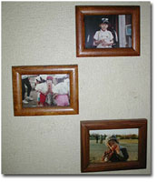

|
■フラミンゴ
――「くり返し」を楽しむ暮らし
小学校と中学時代、たびたび動物園に絵を描きに行った。同じ学年がぞろぞろと出かけるので、それはもうにぎにぎしい事態なのだが、いちばん面白いのは何を描こうか迷ってうろうろしている友だちを見かけることだった。家をでるときは象を描こうと決めていたのに、実際象の前に立つと「どうもちがう」という気になって、電車のなかでちらりと思いついた「ペンギン」も見てみたんだ、とか言っている。
「ペンギンは、どうだったの？」
「なんだかね、寒々としていてね、さみしいんだ」
（動物園にやって来て、寒々しいなんて言い出したらきりがない。そう言わず、おかげさまで、という気持ちになっていた方が、動物たちにとっては慰めがあるのではないか）
などと考えながら、ふーん、と呟いてみる。
「で、山本さんは、何を描くかもう決めた？」
「うふふ、考え中」
といまなら、きっとそう答えるのに、当時は直球選手だった。
「フラミンゴだよ」
「フラミンゴか。いいねえ、色もきれいだし」
こうして、いつも何故だか迷ってさすらっていた友だちを何人かひきつれて、フラミンゴを描くことになったっけ。
動物園の入口から、まっしぐらにフラミンゴのもとに急ぐ私。どうしてだかフラミンゴが好きだったからなのだが、迷わずいつもそこへ行く、ということがもっと好きだったのかもしれない。とにかく、動物園にスケッチに行き、ほかの動物を描いたことはない。いつもいつもフラミンゴだった。動物園というだけで久しぶりに親戚を訪ねるときのような気持ちになっていた。
あれこれ迷うという状態が、どうも苦手なのだ。子どものころから苦手だったので、迷いそこねてきょうまでやってきてしまったような気がする。得意なのは、だから、迂闊、早とちり、早のみこみといった「スピードはあるけれどもだめだなあ」という方面。救いは、あきらめも早いところだろうか。
うまい具合に迷って、考え、結論をだすというのが、大人らしい生き方なのだと思っても、迷い下手を克服できなかったのには理由がある。ひとの生活は、「くり返し」で構成されている。ことに主婦（主夫）の毎日の「くり返し」といったら。3度のごはん。洗濯。掃除。出したりしまったり。広げたりたたんだり。汚しては洗う。使っては買い足すというのもある。これを、ああ、いやになっちゃう、と言えないのが主婦の生活ということもできるだろう。くり返しを楽しまなければ、主婦はつづけられない。この生活のなかで、私はますます迷い下手になったといえる。迷ったが最後、投げ出してしまうような気がした。自分には、飽きっぽいところがあり、そうなったら立場がどうでもきっぱり足を洗ってしまうようなところもあると知っていたから、恐ろしかった。
「献立って、迷うわよね」
というようなことを言うおひとは、飽きっぽくない、地に足のついた質なのだ。夫の嗜好を思い、子どもたちの給食表を確かめ、その日の天候をにらみ、ああだろうかこうだろうかとやさしく揺れながら献立を決める。
私は、かの日、動物園の門をくぐると、まっしぐらにフラミンゴのもとに走ったのとほとんど同じ気持ちで献立を決める。自分が食べたいものを、つくりたいものを作るのである。家のなかの一切合切を、自分の胸ひとつで決めているような気がする。夫に相談をもちかけたり、家族みんなに提案をするというなだらかな経過を経ることはあるが、たとえ反対されても、やるときはやる。
「厨の歳時記」最終回ということで、「くり返し」を楽しむ、愛するという高尚なるはなしを始めたのだったが、私の落ちはいつもこんなふうだ。まことにお恥かしく、恐縮至極。連載の間、食べることの大きさ、楽しみ、大切さを深深と感じるようになった。食べることの恥かしさ、恐ろしさ、苦悩についても、また。そのことは、ここで筆を置いたあとも、しばらく考えてみたい。
ソレデハ。ドコカデ、オメニカカレルヒマデ。サヨウナラ。
今回は、連載4回「Dear Eggs」で開花丼のレシピを提供してくれた石原秀市郎氏に、「サバのうどん」のつくり方を教えてもらいます。文中で紹介した石原さんの「具だくさんのうどん」とはどんなうどん？ という、お問い合わせにこたえて。忙しい暮れのごはんに、お正月料理の合間に、是非つくってみてください。
■サバのうどん（4〜5人分）
乾めん……………………………………2袋（500g）
〔つけつゆ〕
鯖の水煮缶…………………………………………1缶
玉ねぎ………………………………………小さめ1個
長ねぎ（薬味用に少し残しておく）……………1本
ほうれんそう………………………………………適宜
油揚げ………………………………………………1枚
さつま揚げ…………………………………大きめ1枚
乾燥ワカメ…………………………………………適宜
しょうゆ、塩（好みでみりん）…………………適宜
（その他、豚バラ肉、かまぼこ、もやしなどを入れても、おいしい）
●1〜1.5リットルほどの熱湯に、さば缶をつゆごとほぐし入れる。
●薄切りした玉ねぎ、さつま揚げ、油揚げを加える。
●玉ねぎが煮えたところに、長ねぎ（ななめ切り）、乾燥ワカメ、ほうれんそうを入れ、沸騰したらしょうゆ、塩で味をととのえる。最後にゴマ油小さじ1杯のかくし技を。
●お椀によそった熱熱のつゆに、茹でたうどんをつけて食べる。薬味は、長ねぎの小口切り、七味唐辛子。ラー油もおすすめ。
※市販のつゆの素を使って、つゆをつくってもおいしくできる。
※サバのつゆには、腰のあるうどんより、細めんが合う。
「このつゆは1980年、青森出身の職場の先輩から教わりました。なんといっても出来たてが美味しい。しばらく置くとちょっと魚くさく感じるかもしれません」
レシピ／石原秀市郎

|